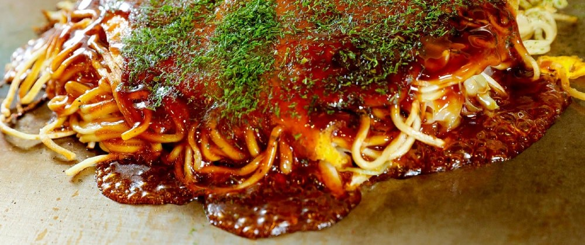
| 営業時間 | 平日11:30〜14:30／17:30〜21:00、土日祝11:00〜14:30／17:00〜21:00（最終受付は閉店30分前） |
|---|---|
| 定休日 | 火曜日（火曜が祝日の場合は翌日の水曜） |
| 住所 | 広島県広島市中区八丁堀6-7 チュリス八丁堀1F |
| 予約 | テイクアウトのみ可（店内の席は予約不可） — ☎ 082-221-5438 ／ 公式サイト |
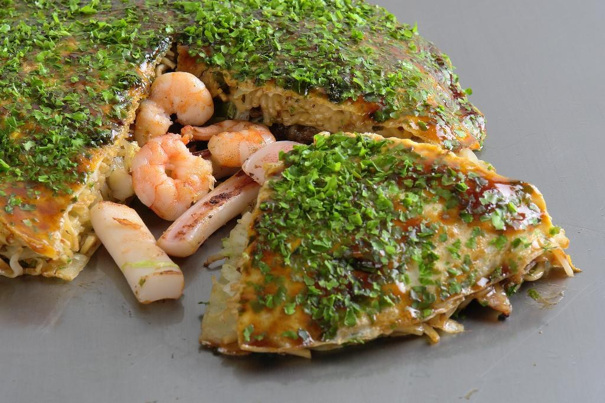
| 営業時間 | 11:00〜22:00（L.O. 食事21:15／ドリンク21:30）※2026年10月5日改定 |
|---|---|
| 定休日 | 不定休（公式サイトのよくある質問による。ekieの休みに準ずる） |
| 住所 | 広島県広島市南区松原町1-2 ekie 1F |
| 予約 | 店内席は不可（行列のため受け付けていない）。テイクアウトは電話で事前注文可 — ☎ 082-286-2382 ／ 公式サイト |
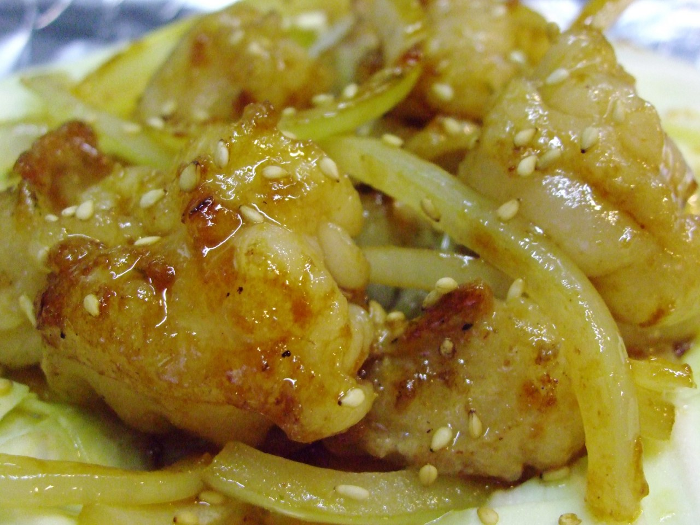
| 営業時間 | 11:00〜20:00（料理L.O. 20:00） |
|---|---|
| 定休日 | 火曜日、第2・第4水曜日（7月と8月は変則） |
| 住所 | 広島県広島市中区大手町1-7-19 |
| 予約 | ネット予約は受け付けていない（電話での可否は未確認） — ☎ 082-247-0787 |
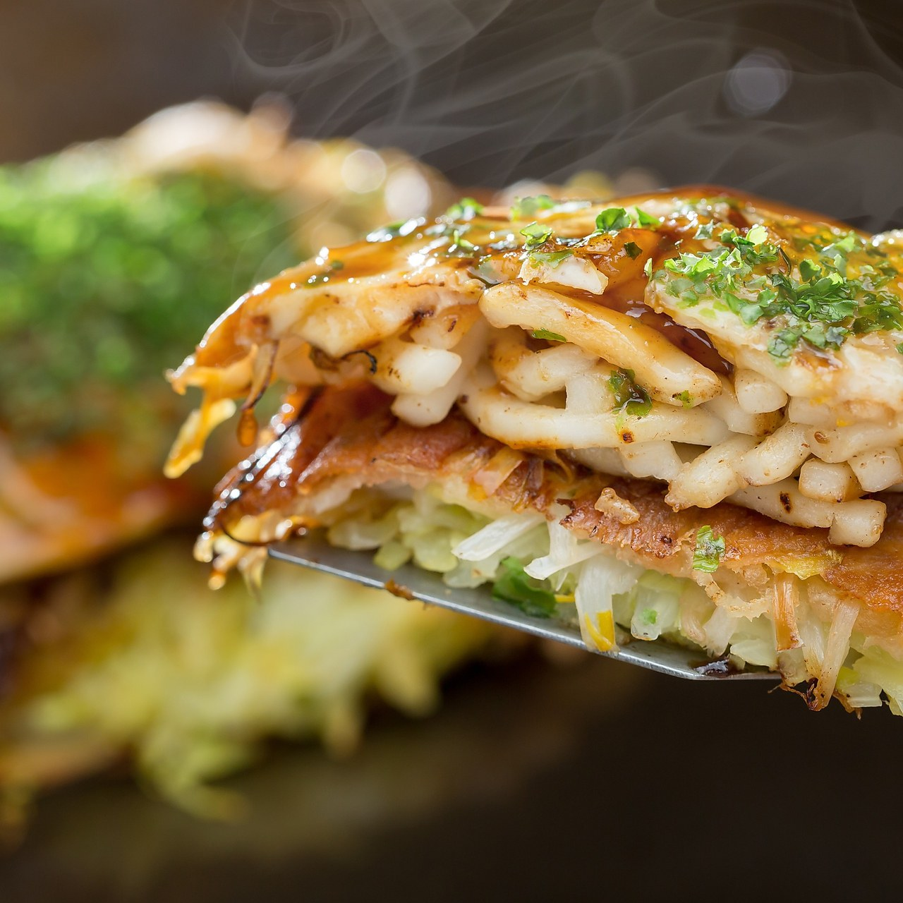
| 営業時間 | 月・火・木・金・祝 16:00〜翌2:00頃／土・祝前日 16:00〜翌3:00頃／日 16:00〜24:00頃（公式サイトのアクセスページによる。材料がなくなり次第終了の日あり） |
|---|---|
| 定休日 | 水曜日（ほかに代休・臨時休業あり。公式サイトの新着情報で告知される） |
| 住所 | 広島県広島市中区流川町8-20 エイトビル2F |
| 予約 | 団体は電話で予約可（受付は電話のみ・営業時間内。日によって受けられないことがある）。ネット予約は受け付けていない — ☎ 082-243-8400 ／ 公式サイト |
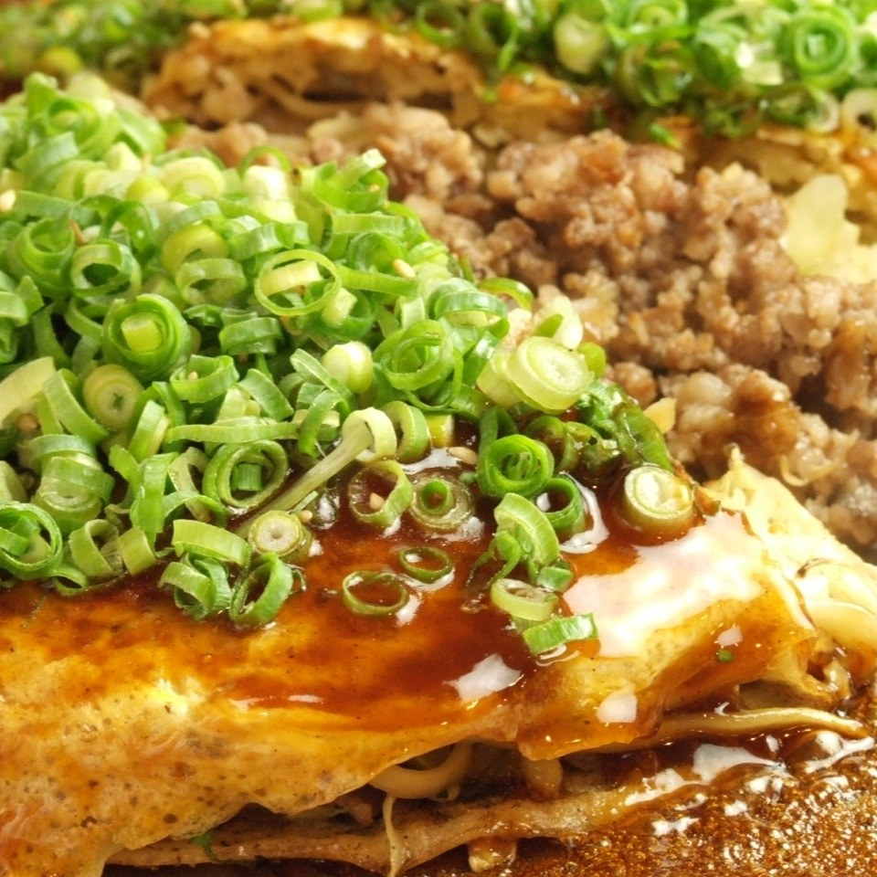
| 営業時間 | 月・水〜日 17:00〜翌0:00（料理・ドリンクL.O. 23:30／テイクアウトとデリバリーは23:00まで） |
|---|---|
| 定休日 | 火曜日 |
| 住所 | 広島県広島市中区田中町6-3 音戸温泉ビル1F |
| 予約 | 可（ネット予約・電話とも可。ワンドリンクオーダー制） — ☎ 082-240-8222 ／ 公式サイト |
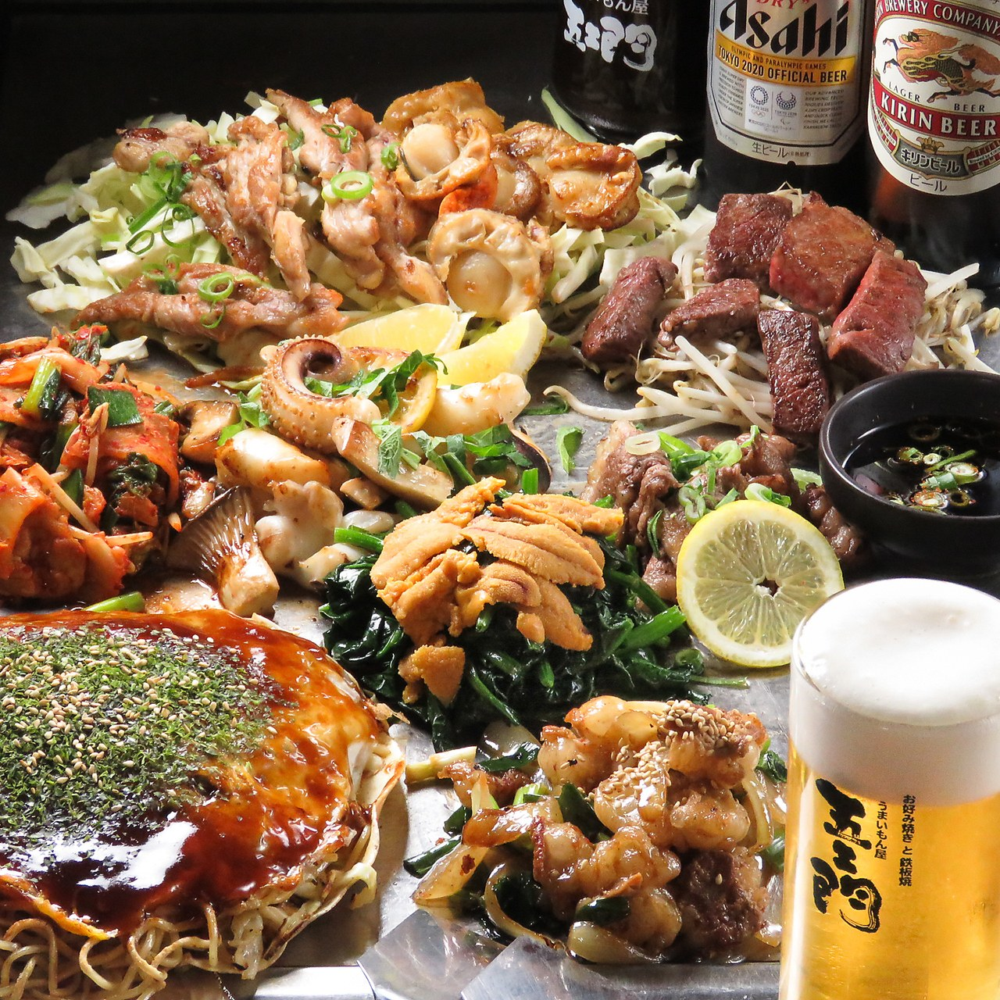
| 営業時間 | 月〜土・祝前日 11:30〜14:00（L.O. 13:00）／17:00〜翌0:00（L.O. 翌0:00）、日・祝 11:30〜14:00／17:00〜23:00（L.O. 22:30） |
|---|---|
| 定休日 | なし |
| 住所 | 広島県広島市中区胡町3-14 アーバン胡館1F |
| 予約 | 電話で可（ネット予約は受け付けていない） — ☎ 082-249-8089 ／ 公式サイト |
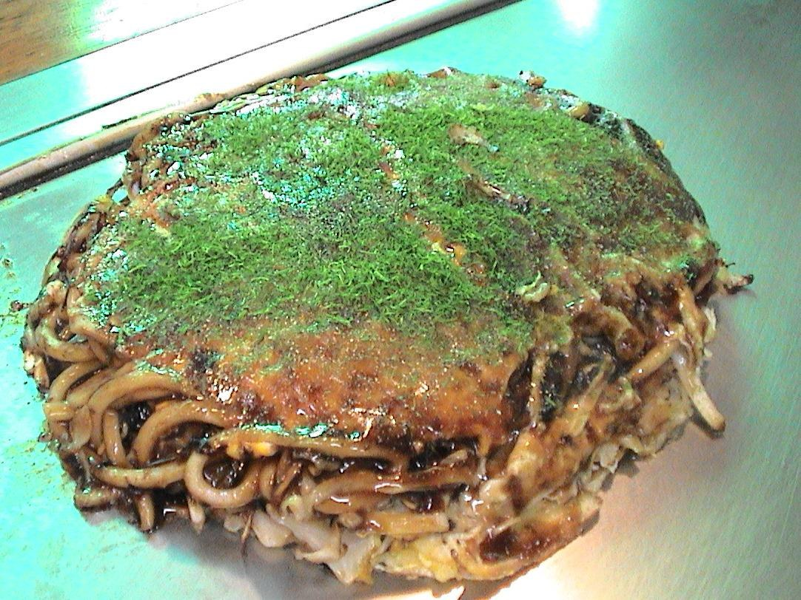
| 営業時間 | 月・水・木 16:30〜23:00（L.O. 22:30）／火・金 11:30〜14:00（L.O. 14:00）※店舗情報の更新日は2020年1月のため要確認 |
|---|---|
| 定休日 | 土曜・日曜・祝日（12月30日〜1月3日は年末年始休業） |
| 住所 | 広島県広島市西区楠木町1-7-13 |
| 予約 | ネット予約は受け付けていない（電話での可否は未確認） — ☎ 082-232-5277 |
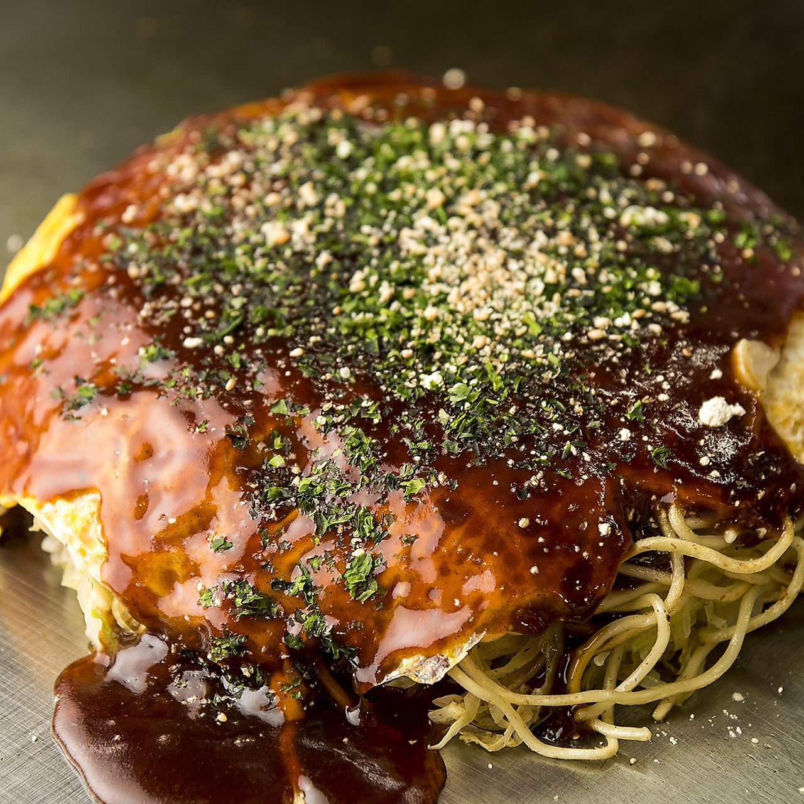
| 営業時間 | 月・火・金〜日・祝 11:00〜14:00（料理L.O. 13:15／ドリンクL.O. 13:30）／17:00〜21:00（料理L.O. 20:15／ドリンクL.O. 20:30） |
|---|---|
| 定休日 | 水曜・木曜（年末年始は要問い合わせ） |
| 住所 | 広島県広島市西区南観音2-2-22 |
| 予約 | 可（ネット予約は来店当日20時まで、リクエスト予約は3日前まで） — ☎ 082-533-6666 ／ 公式サイト |
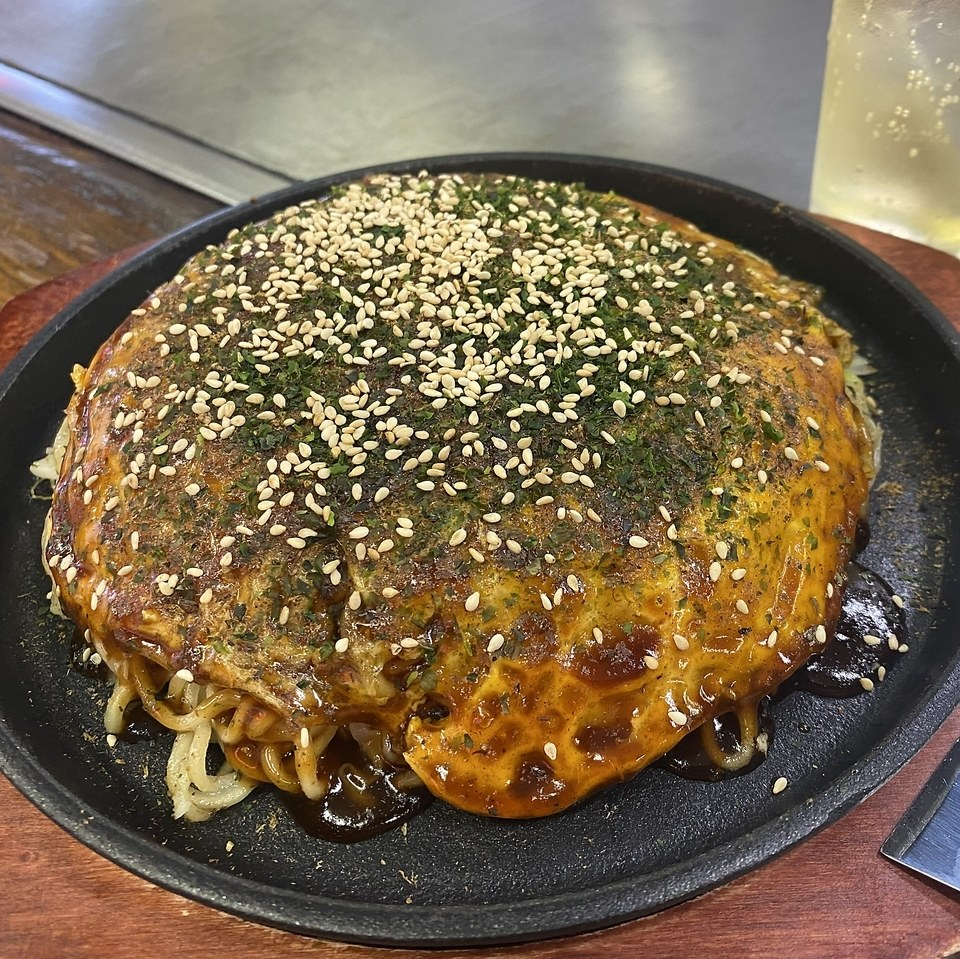
| 営業時間 | 11:00〜20:30 |
|---|---|
| 定休日 | 不定休 |
| 住所 | 広島県広島市佐伯区五日市町下河内42 |
| 予約 | ネット予約は受け付けていない（電話で要問い合わせ。問い合わせは午前10時から） — ☎ 082-299-3677 |
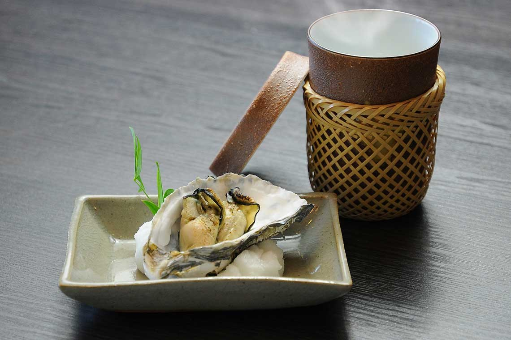
| 営業時間 | 11:00〜14:30／17:00〜20:00（いずれもラストオーダー）。牡蠣料理は通年提供（公式メニューに季節限定の表記なし）だが、牡蠣の旬は11〜3月 |
|---|---|
| 定休日 | 年末年始 |
| 住所 | 広島県広島市中区大手町1丁目地先 |
| 予約 | 可（公式サイトのオンライン予約、または電話082-241-7416） — ☎ 082-241-7416 ／ 公式サイト |
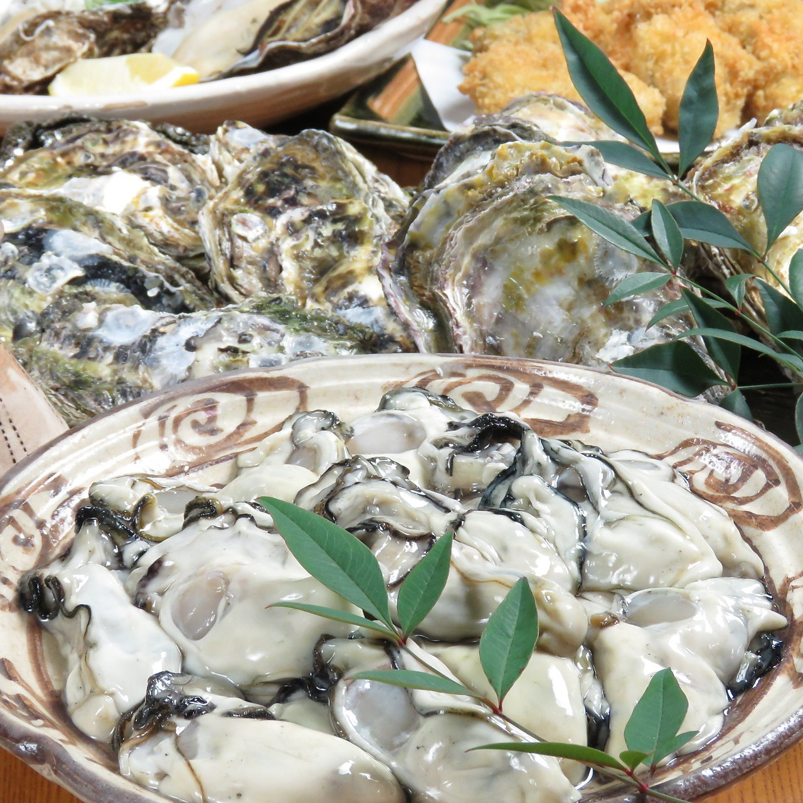
| 営業時間 | 昼 11:00〜14:00（ラストオーダー13:30）／夜 17:00〜22:00（ラストオーダー21:00）。※月曜の昼は休み。生牡蠣は通年提供（牡蠣の旬は11〜3月） |
|---|---|
| 定休日 | 日曜（月曜が祝日の場合は営業） |
| 住所 | 広島県広島市東区光町2-8-24 ダイケンビル1階 |
| 予約 | 可（電話082-264-5968、またはホットペッパーグルメのネット予約。キャンセルは2日前まで） — ☎ 082-264-5968 ／ 公式サイト |
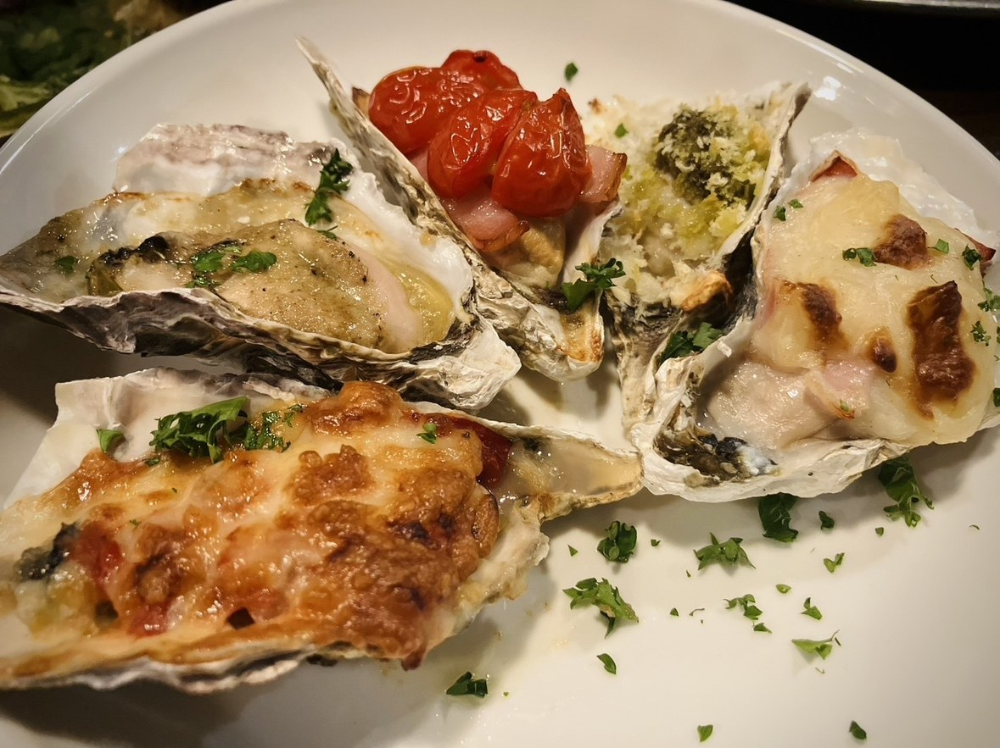
| 営業時間 | 月・水〜金・祝前日 15:00〜22:30（ラストオーダー22:00）／土・日・祝 12:00〜22:30（ラストオーダー22:00） |
|---|---|
| 定休日 | 火曜（ほかに不定休あり） |
| 住所 | 広島県広島市中区本通1-6 金座街FSビル B1 |
| 予約 | 可（電話080-2899-5966、またはホットペッパーグルメのネット予約） — ☎ 080-2899-5966 |
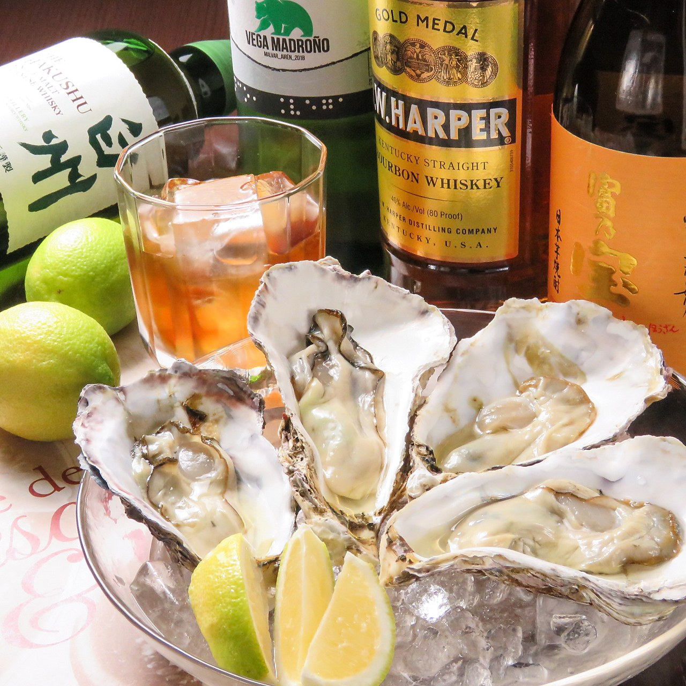
| 営業時間 | 月〜土・祝日・祝前日 17:00〜翌1:00（料理ラストオーダー翌0:00）／日 17:00〜翌0:00（料理ラストオーダー23:00）。牡蠣は季節により産地を替えて通年提供 |
|---|---|
| 定休日 | 不定休 |
| 住所 | 広島県広島市中区胡町3-17 大戸ビル1F |
| 予約 | 可（電話082-240-0190は15時以降。ホットペッパーグルメのネット予約は当日22時まで） — ☎ 082-240-0190 |
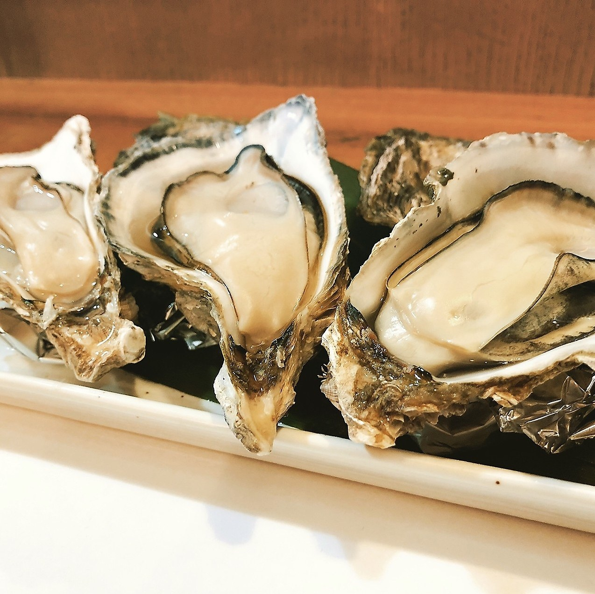
| 営業時間 | 月〜日・祝日・祝前日 17:30〜23:00（料理・ドリンクともラストオーダー22:00）。週末・連休は2時間の時間制になる場合あり。牡蠣ポン酢と牡蠣鍋は冬季限定、生・焼き・フライは通年 |
|---|---|
| 定休日 | 不定休 |
| 住所 | 広島県広島市中区中町7-16 ポレスター広島103 |
| 予約 | 可（電話082-246-7591、またはホットペッパーグルメのネット予約） — ☎ 082-246-7591 |
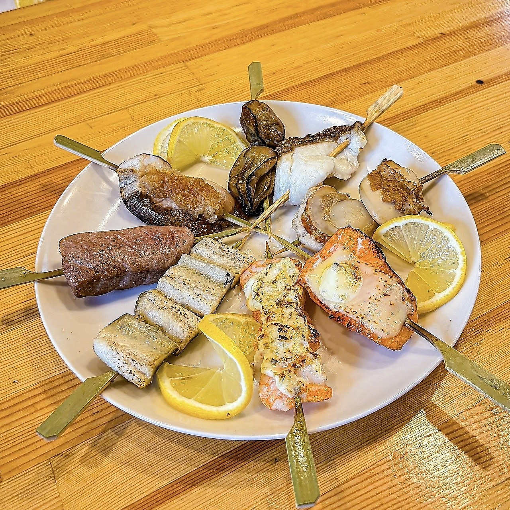
| 営業時間 | 16:00〜翌0:00（料理ラストオーダー23:30、ドリンクラストオーダー翌0:00）。牡蠣は通年提供の掲載（牡蠣の旬は11〜3月） |
|---|---|
| 定休日 | なし |
| 住所 | 広島県広島市南区大須賀町12-12 |
| 予約 | 可（電話080-1300-3728、またはホットペッパーグルメのネット予約。2階は最大10名まで） — ☎ 080-1300-3728 |
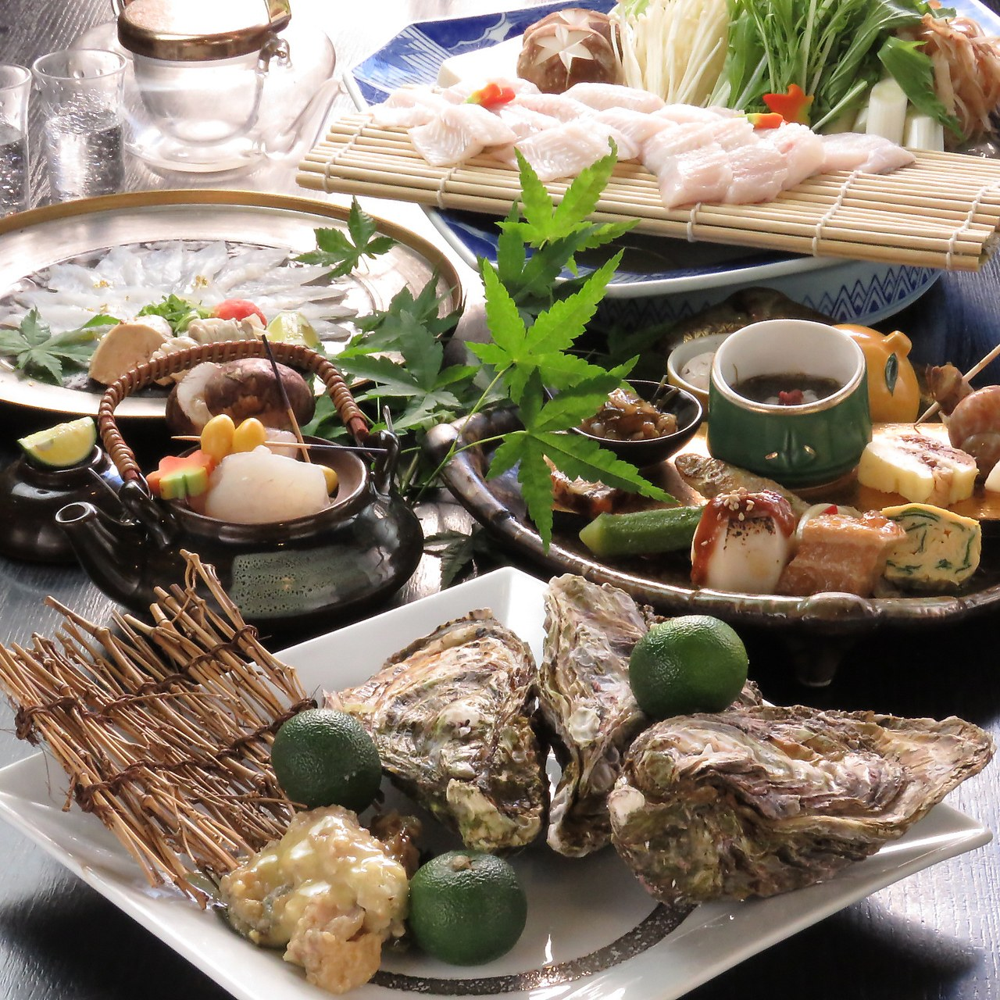
| 営業時間 | 11:30〜14:00（料理ラストオーダー13:30）／17:00〜翌0:00（料理ラストオーダー23:30）。小いわしは6月10日の漁解禁以降の夏が本番で、刺身は仕入れ次第 |
|---|---|
| 定休日 | なし |
| 住所 | 広島県広島市中区胡町2-20 |
| 予約 | 可（電話082-240-4008、またはホットペッパーグルメのネット予約。※昼のネット予約は受付なし） — ☎ 082-240-4008 |
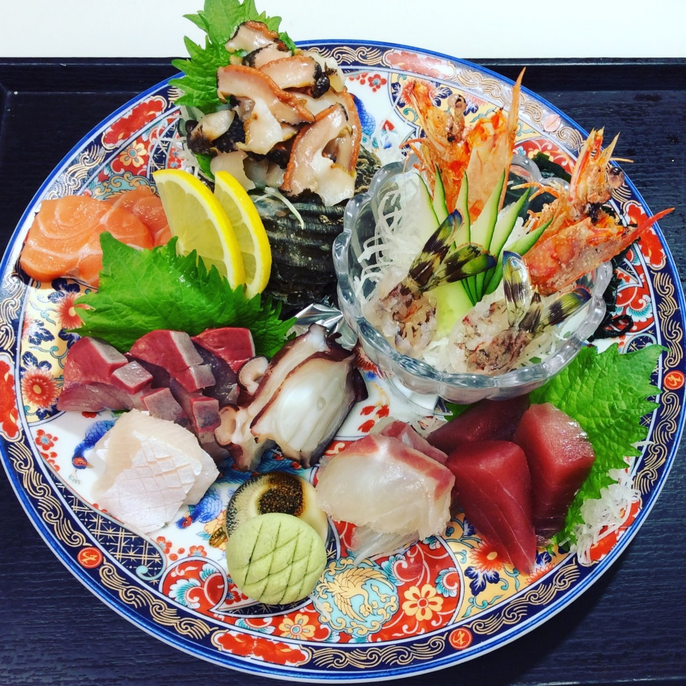
| 営業時間 | 11:00〜14:30（ランチのラストオーダー13:50）／17:00〜22:00（ラストオーダー21:00）。お盆と正月は通常と異なる。小いわしは6月10日の漁解禁以降の夏が本番で、仕入れ次第 |
|---|---|
| 定休日 | 水曜 |
| 住所 | 広島県広島市西区観音町7-29 |
| 予約 | 可（電話082-297-4013、またはホットペッパーグルメのリクエスト予約＝来店日の3日前まで） — ☎ 082-297-4013 |
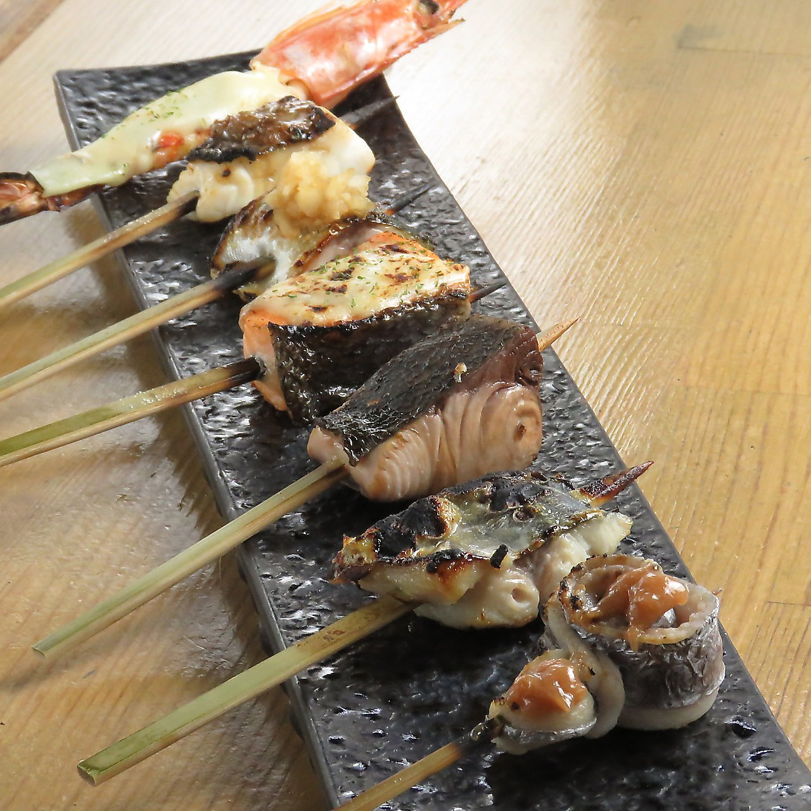
| 営業時間 | 月・火・木・日・祝 17:30〜23:30（ラストオーダー23:00）／金・土・祝前日 17:30〜翌0:30（ラストオーダーは店の案内では23:50） |
|---|---|
| 定休日 | 水曜 |
| 住所 | 広島県広島市西区三篠町1丁目10-1 |
| 予約 | 可（電話082-530-7025、またはホットペッパーグルメのネット予約。2階フロア17名まで貸切可） — ☎ 082-530-7025 |
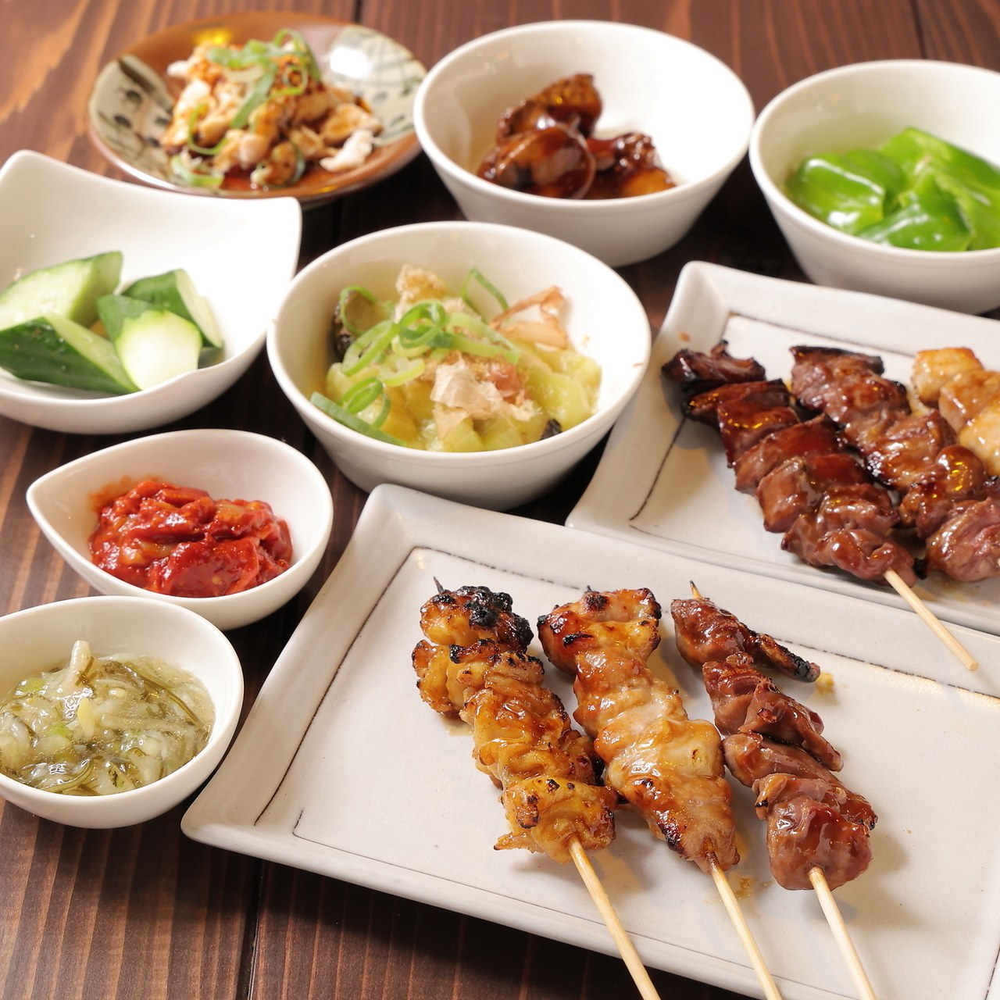
| 営業時間 | 月〜木 17:00〜翌1:00（料理・ドリンクL.O. 翌0:30）／金・祝前日 17:00〜翌2:00（L.O. 翌1:30）／土・祝 13:00〜翌2:00（L.O. 翌1:30）／日 13:00〜翌1:00（L.O. 翌0:30） |
|---|---|
| 定休日 | なし（無休） |
| 住所 | 広島県広島市中区流川町2-22 インペリアルファーストビル1F |
| 予約 | 可（ネット予約可） — ☎ 082-298-9799 |
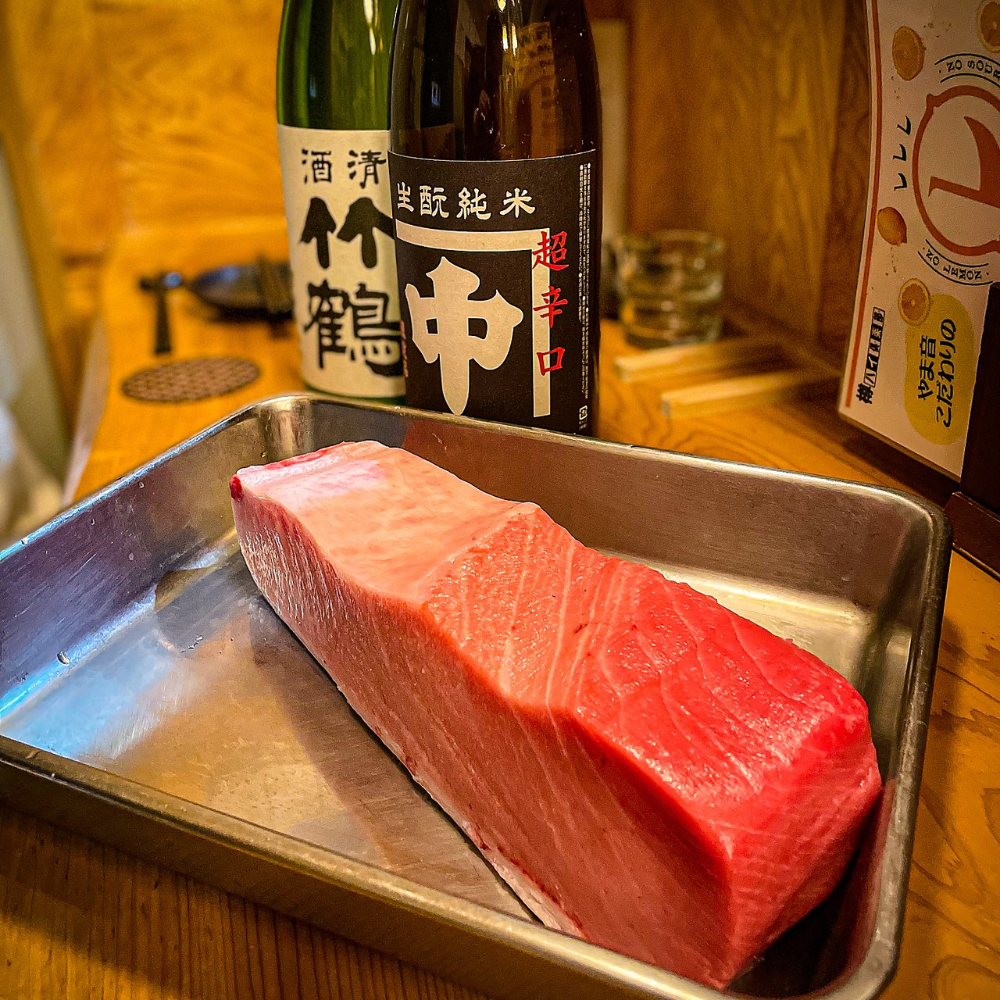
| 営業時間 | 月〜木 17:30〜23:00（料理・ドリンクL.O. 22:00）／金・土・祝前日 17:30〜翌0:00（L.O. 23:00） |
|---|---|
| 定休日 | 日曜・祝日（ほかに不定休あり） |
| 住所 | 広島県広島市中区流川町5-19 共栄ビル2階 |
| 予約 | 可（ネット予約可。コースは3名から） — ☎ 082-241-1788 |
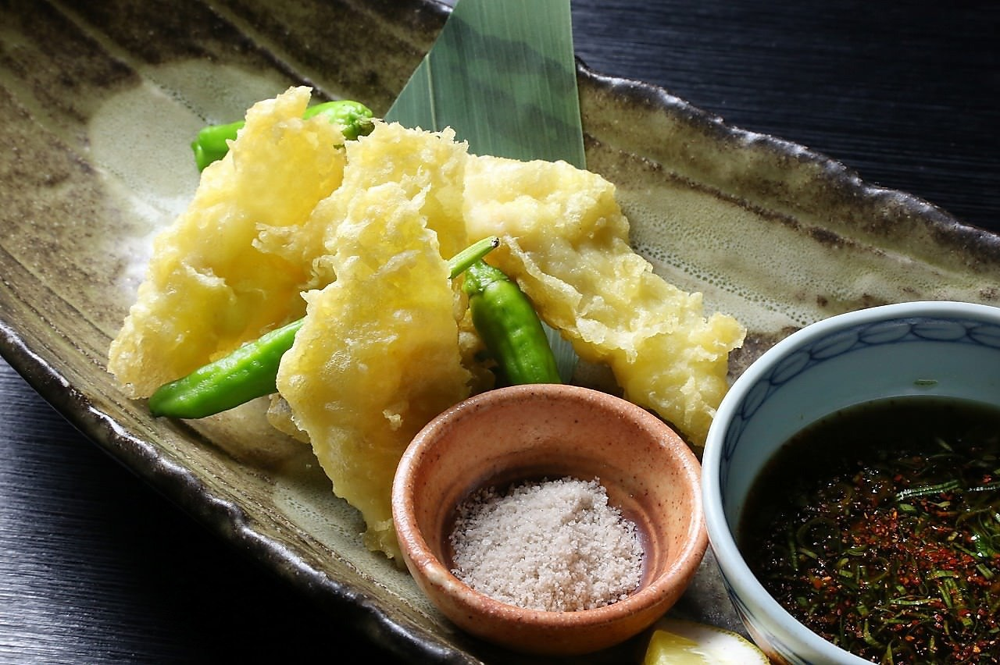
| 営業時間 | 火〜日・祝・祝前日 18:00〜翌1:00（料理・ドリンクL.O. 翌0:00） |
|---|---|
| 定休日 | 月曜（月曜が祝日の場合は営業し、翌火曜が休み） |
| 住所 | 広島県広島市中区流川町1-7 セントラルゲート5ブロック |
| 予約 | 可（ネット予約可） — ☎ 082-247-2787 |
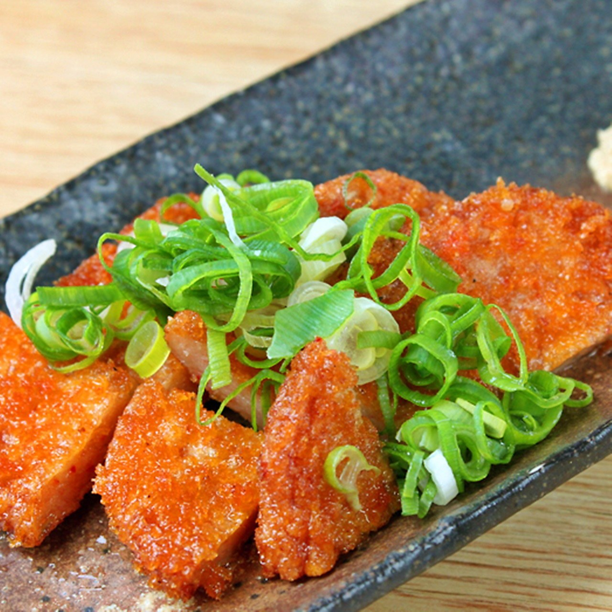
| 営業時間 | 月〜日・祝・祝前日 11:00〜翌9:00（昼11時開店、朝9時まで通し営業） |
|---|---|
| 定休日 | 不定休 |
| 住所 | 広島県広島市中区流川町8-13 第3ハワイヤビル1F |
| 予約 | 可（ネット予約可。混雑時は2時間制） — ☎ 082-247-7890 |
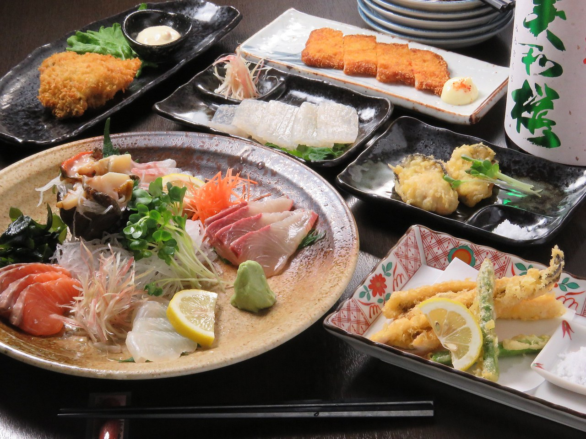
| 営業時間 | 月〜土 17:30〜23:00（料理L.O. 22:00／ドリンクL.O. 22:30） |
|---|---|
| 定休日 | 日曜・祝日（ほかに臨時休業あり） |
| 住所 | 広島県広島市中区中町5-6 エポカ中町 |
| 予約 | 可（ネット予約可） — ☎ 082-244-8868 |
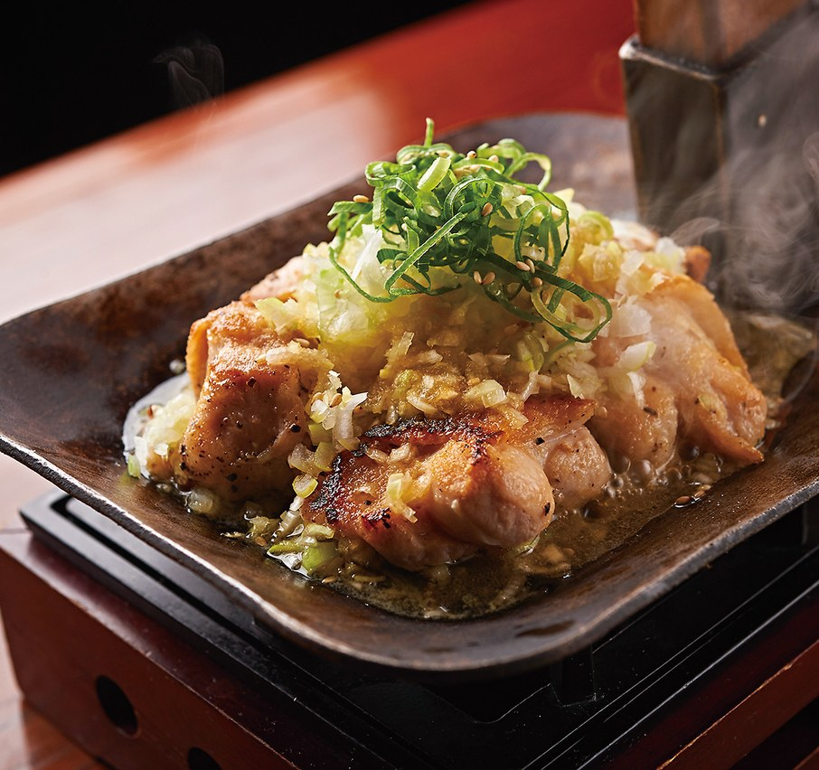
| 営業時間 | 月〜土 17:00〜23:30（料理・ドリンクL.O. 23:00）／日・祝 17:00〜23:00（L.O. 22:00） |
|---|---|
| 定休日 | なし（無休） |
| 住所 | 広島県広島市中区袋町1-13 日専連ビル1階 |
| 予約 | 可（ネット予約可） — ☎ 082-243-6351 |
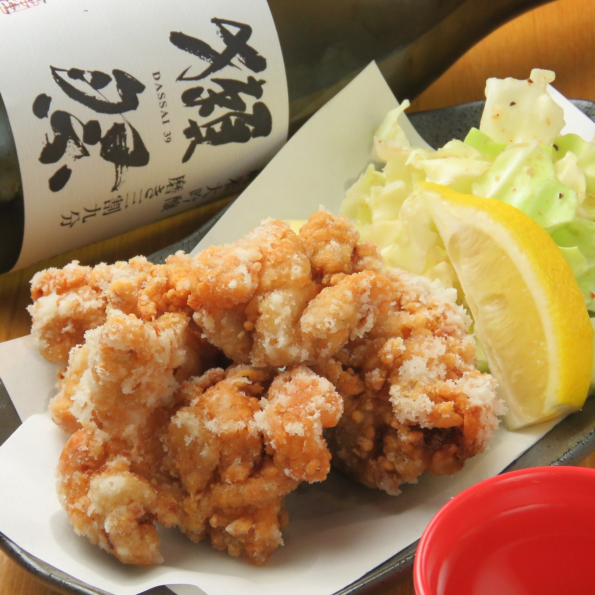
| 営業時間 | 月〜土・祝・祝前日 17:00〜翌0:00（料理・ドリンクL.O. 23:30） |
|---|---|
| 定休日 | 日曜 |
| 住所 | 広島県広島市南区大須賀町11-8 |
| 予約 | 可（ネット予約可） — ☎ 090-7370-4448 |
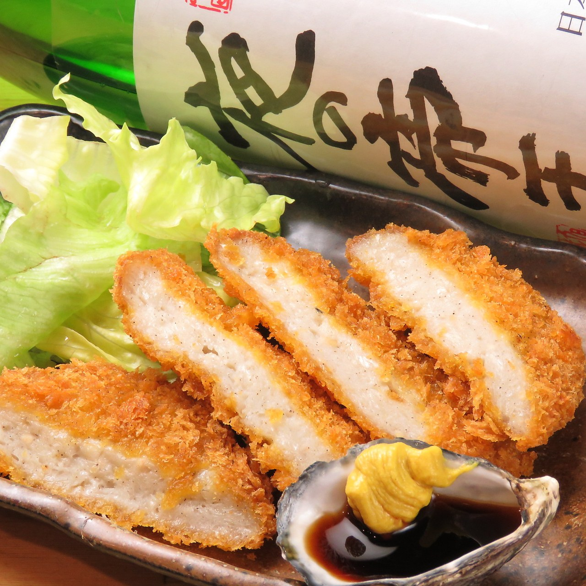
| 営業時間 | 月〜日・祝・祝前日 17:00〜翌0:00（料理L.O. 23:00／ドリンクL.O. 23:30） |
|---|---|
| 定休日 | なし（無休） |
| 住所 | 広島県広島市中区大手町3-1-8 B1F |
| 予約 | 可（ネット予約可） — ☎ 082-236-8850 |
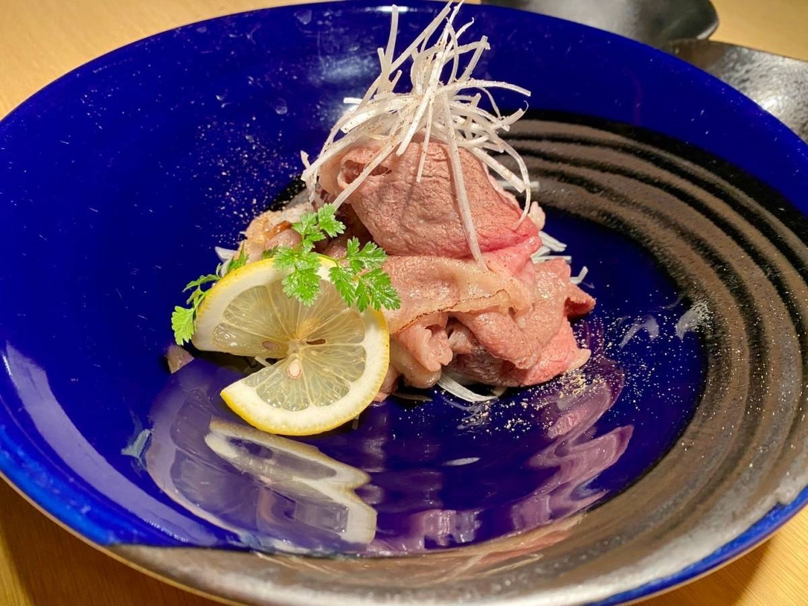
| 営業時間 | 月〜日 17:00〜23:00（料理・ドリンクL.O. 22:30） |
|---|---|
| 定休日 | 年中無休（12月31日・1月1日のみ休み） |
| 住所 | 広島県広島市佐伯区五日市中央1-3-28 |
| 予約 | 可（ネット予約可。コースは席の確保が2時間半） — ☎ 082-925-0677 |
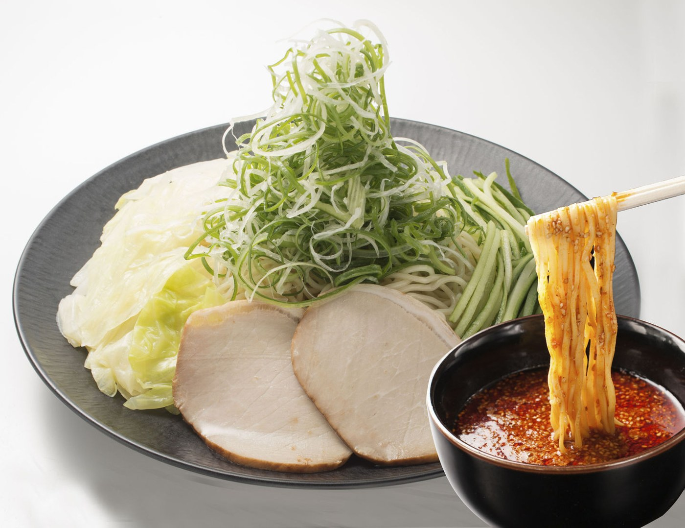
| 営業時間 | 11:00〜22:00(L.O.21:00) |
|---|---|
| 定休日 | 無休(ekieが休館の日は休み) |
| 住所 | 広島県広島市南区松原町1-2 ekie 2F |
| 予約 | 不可(カウンター中心の麺店のため席の予約は受けていない。持ち帰りは電話で注文可) — ☎ 082-236-3889 ／ 公式サイト |
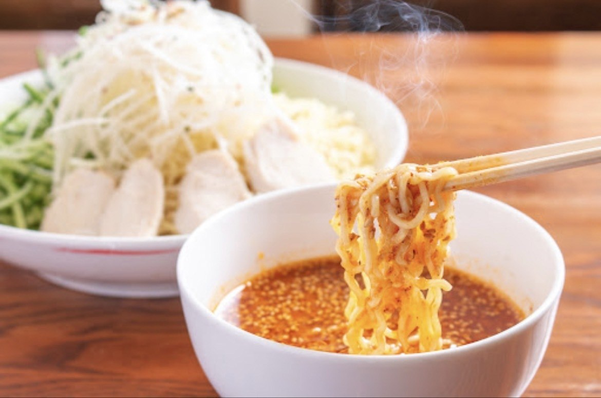
| 営業時間 | 18:00〜翌3:00(料理L.O.翌2:50 ドリンクL.O.翌2:50) |
|---|---|
| 定休日 | 日曜 |
| 住所 | 広島県広島市中区薬研堀5-18 パールビル1F |
| 予約 | 可(ホットペッパーグルメ経由のネット予約あり) |
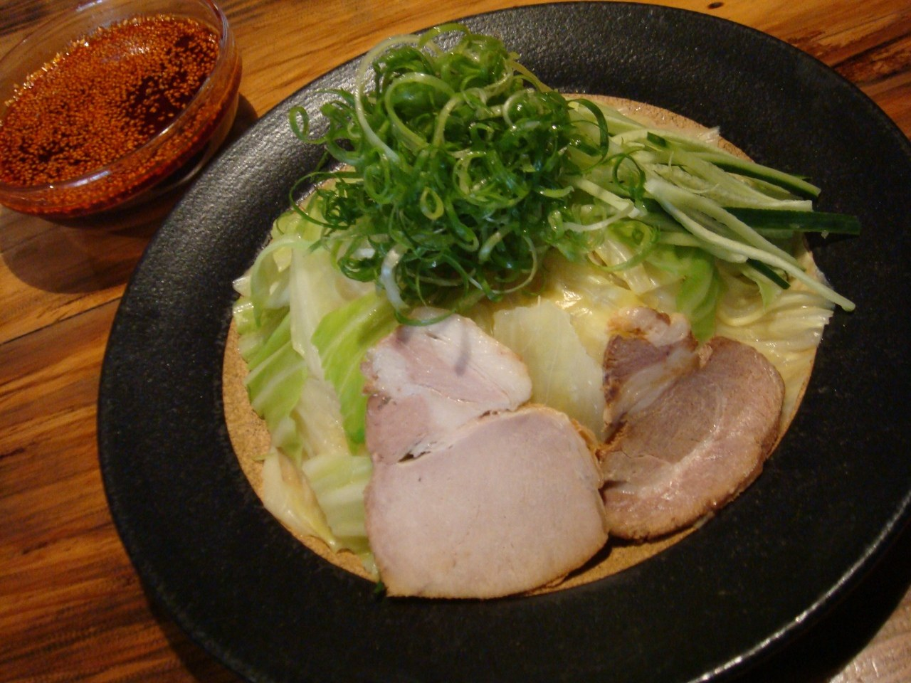
| 営業時間 | 11:30〜15:00／18:00〜23:00(料理L.O.22:45 ドリンクL.O.22:45) |
|---|---|
| 定休日 | 無休 |
| 住所 | 広島県広島市中区十日市町1-4-29 1F |
| 予約 | 不要(持ち帰りは電話予約可) — 公式サイト |
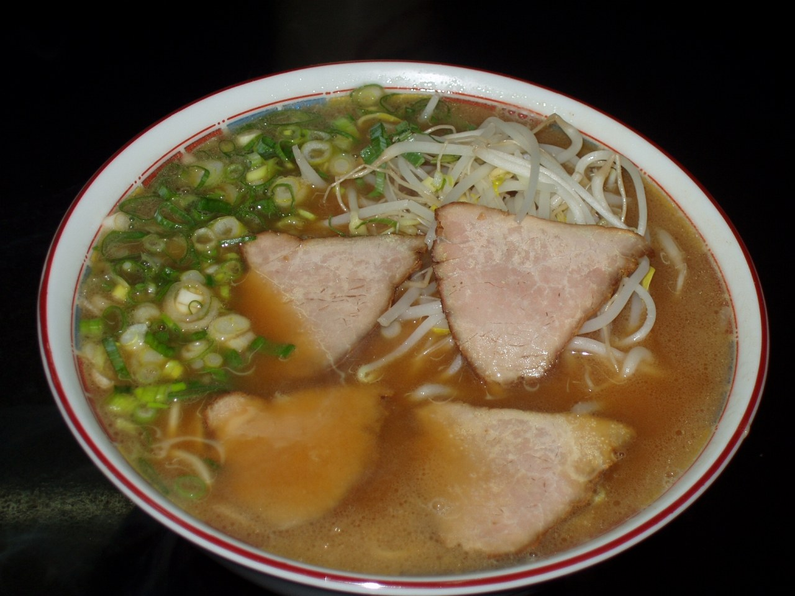
| 営業時間 | 20:00〜翌2:00 |
|---|---|
| 定休日 | 日曜、祝日 |
| 住所 | 広島県広島市中区流川町3-16 |
| 予約 | 不要(カウンター10席のみ) |
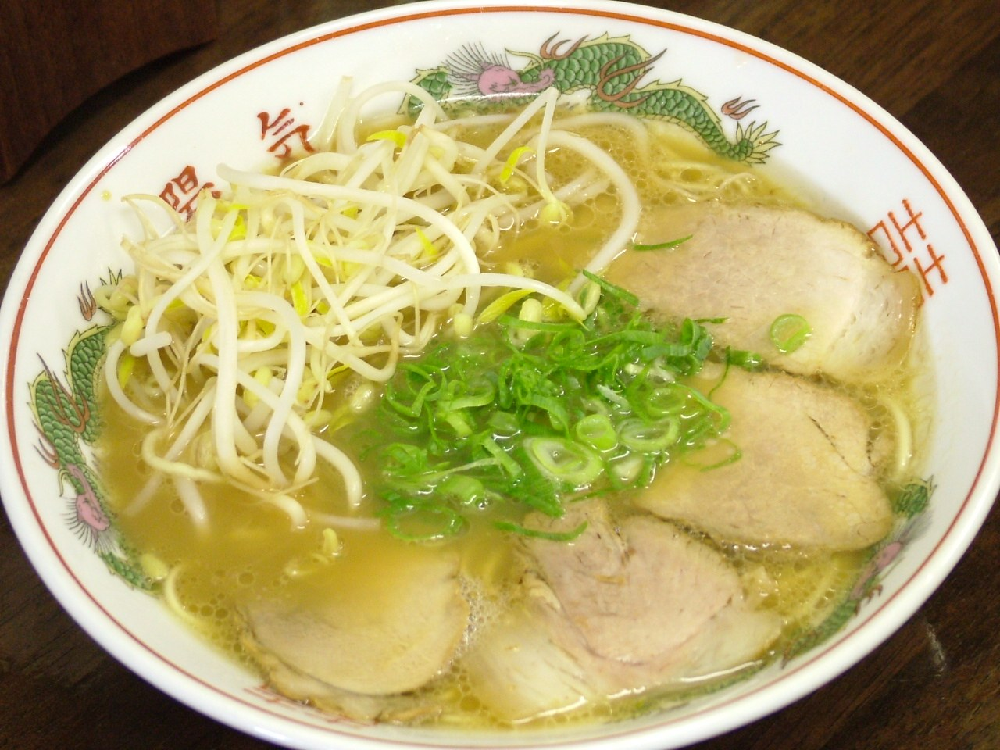
| 営業時間 | 11:00〜22:00 |
|---|---|
| 定休日 | 日曜、毎月6日 |
| 住所 | 広島県広島市中区大手町3-1-6 |
| 予約 | 不要 |
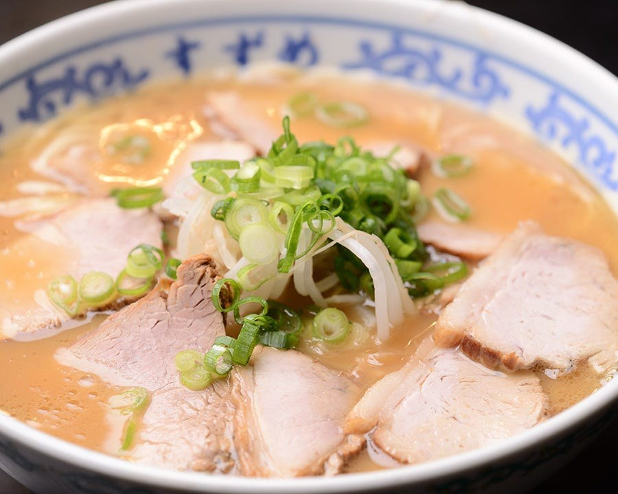
| 営業時間 | 月〜土 11:30〜15:00(スープが切れ次第終了)／夜は木曜19:30〜22:00・土曜19:00〜22:00のみ |
|---|---|
| 定休日 | 日曜、毎月14日 |
| 住所 | 広島県広島市中区舟入幸町18-8 ※ホットペッパーグルメは18-10と表記。番地は未確認 |
| 予約 | 不要 |
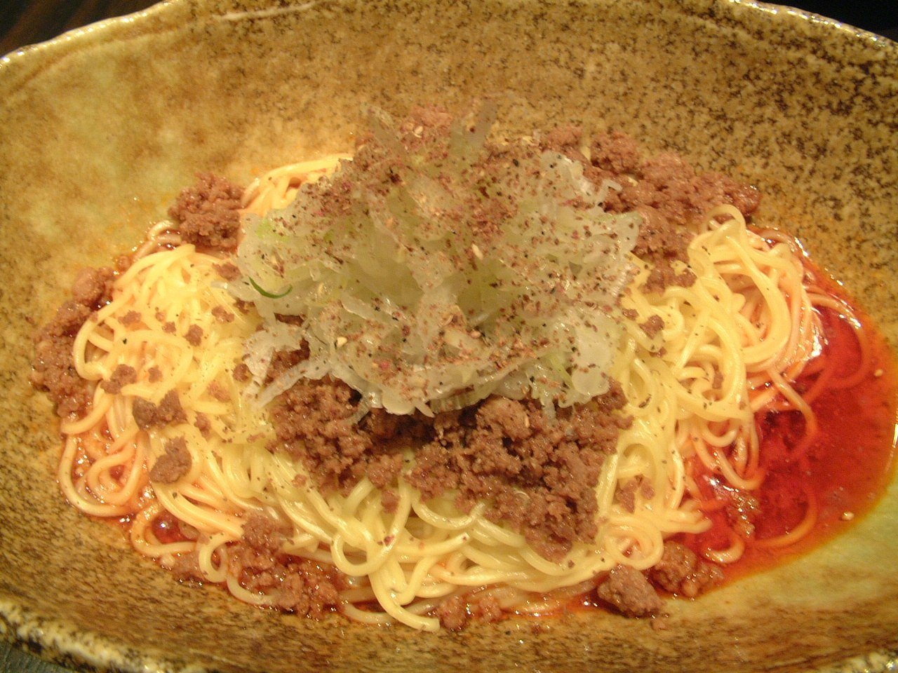
| 営業時間 | 月〜金 11:00〜15:00／17:00〜21:00、土 11:00〜15:00 |
|---|---|
| 定休日 | 日曜 |
| 住所 | 広島県広島市中区八丁堀8-10 清水ビル1F |
| 予約 | 不要 |
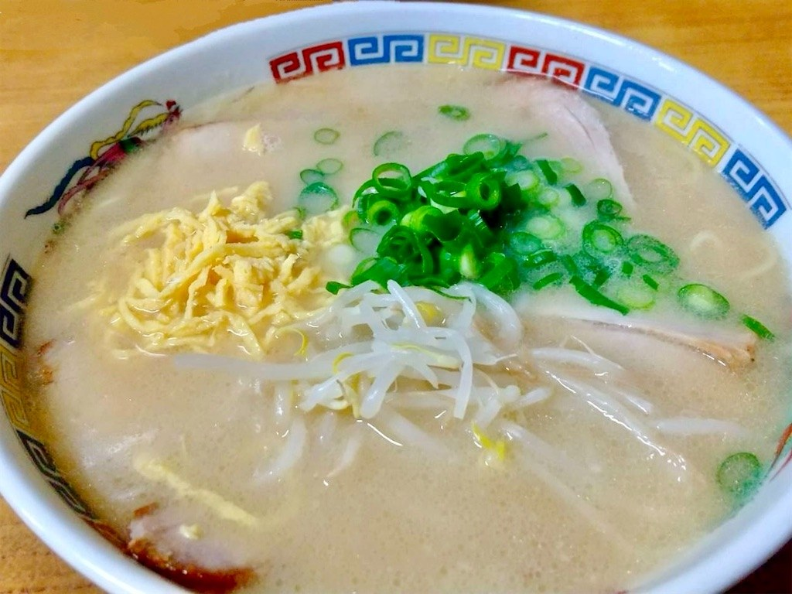
| 営業時間 | 11:00〜15:30／17:00〜20:00(HAMONI掲載。祝日は異なる場合あり) |
|---|---|
| 定休日 | 月曜(個人ブログの2016年の記事による。一次情報では未確認) |
| 住所 | 広島県広島市南区西翠町3-3 |
| 予約 | 不要 — ☎ 082-253-1701 |
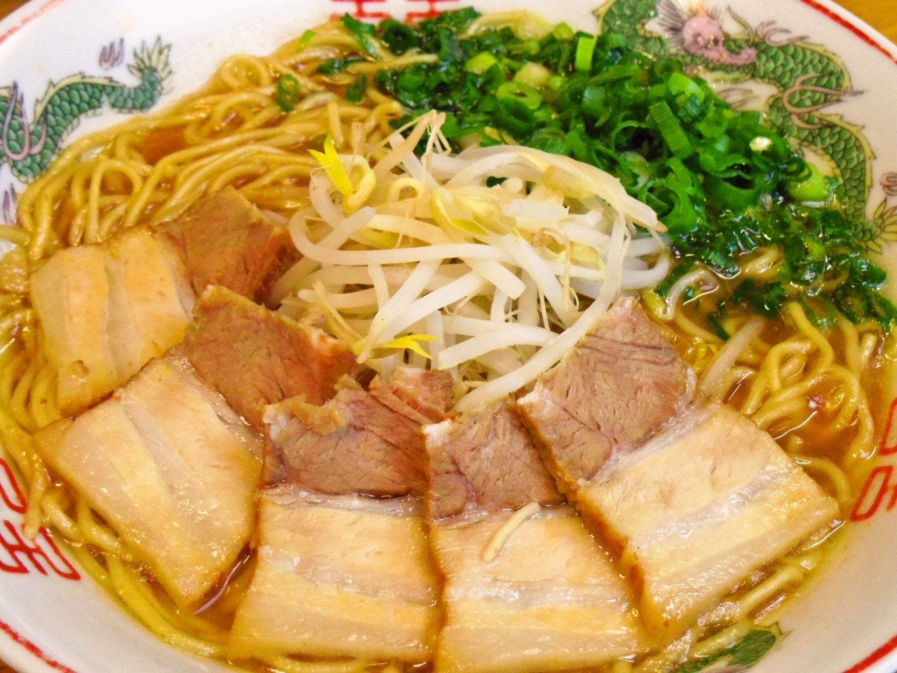
| 営業時間 | 11:45〜14:30／17:30〜翌0:15 |
|---|---|
| 定休日 | 無休(元旦の昼のみ休み) |
| 住所 | 広島県広島市西区庚午北2-23-2 |
| 予約 | 不要(カウンター10席のみ) |
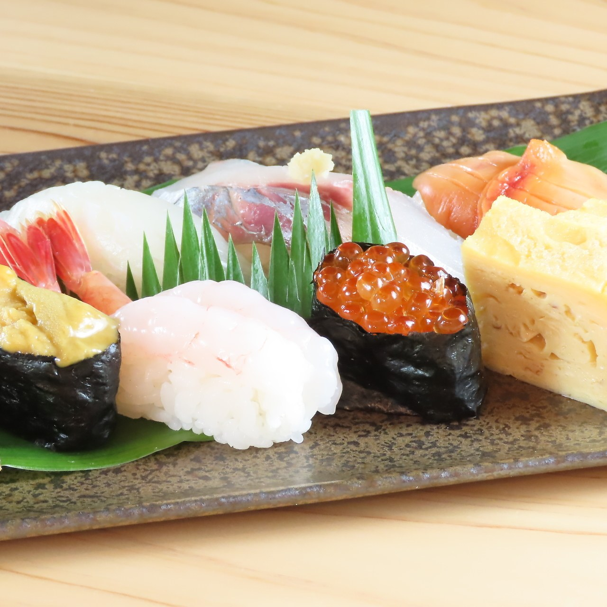
| 営業時間 | 月〜土・祝前日 18:00〜翌0:00（料理・ドリンクL.O. 23:30）／日・祝 18:00〜22:00（料理・ドリンクL.O. 21:30）※ネタがなくなり次第終了する場合あり |
|---|---|
| 定休日 | なし（不定休） |
| 住所 | 広島県広島市中区流川町3-5 1F |
| 予約 | 可（ネット予約は来店日当日22時まで受付。問い合わせは16:00以降） — ☎ 082-245-3695 |
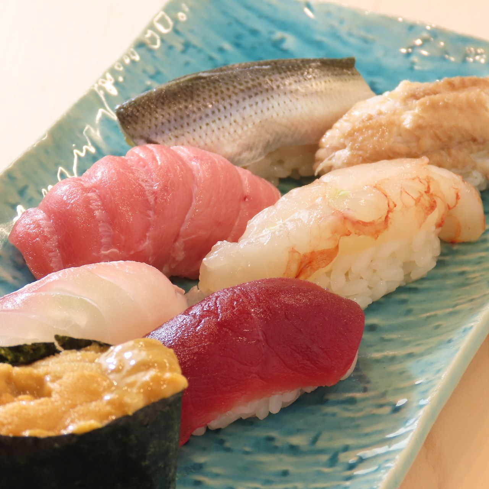
| 営業時間 | 月・火・木〜日・祝・祝前日 11:30〜14:00（料理L.O. 13:30／ドリンクL.O. 13:30）、17:00〜23:00（料理L.O. 22:00／ドリンクL.O. 22:30）※来店状況により早く閉める場合あり |
|---|---|
| 定休日 | 水曜 |
| 住所 | 広島県広島市西区横川町1丁目5-22 |
| 予約 | 可（ネット予約は来店日当日22時まで。リクエスト予約は前日17時まで） — ☎ 082-554-5118 |
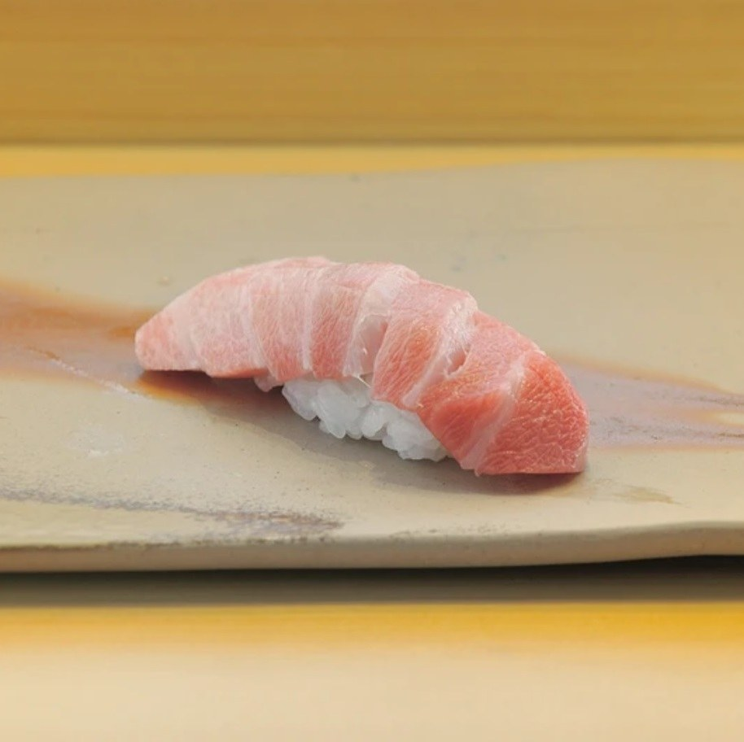
| 営業時間 | 火〜日・祝・祝前日 11:30〜14:00（料理L.O. 13:30）、17:00〜22:00（料理L.O. 21:00）※コースのL.O.は20:00 |
|---|---|
| 定休日 | 月曜 |
| 住所 | 広島県広島市南区松原町5-1 ビッグフロントひろしま4階 |
| 予約 | 可（ホットペッパーのネット予約は現在停止。電話で要予約。電話番号は未確認） |
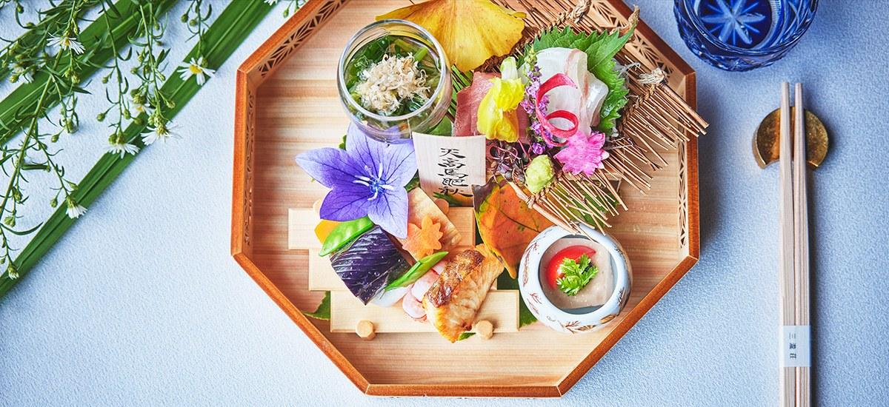
| 営業時間 | ランチ 11:30〜15:30（料理L.O. 14:30）／ディナー 17:30〜22:00（料理L.O. 21:00）。施設の営業は10:00〜22:00 |
|---|---|
| 定休日 | 水曜（婚礼のある土日祝は個室のみの営業） |
| 住所 | 広島県広島市西区三滝町1-3 |
| 予約 | 要予約（公式のオンライン予約、または予約専用 050-5443-6200。受付は月火木金11:00〜20:00・土日祝10:00〜20:00） — ☎ 082-537-0220 ／ 公式サイト |
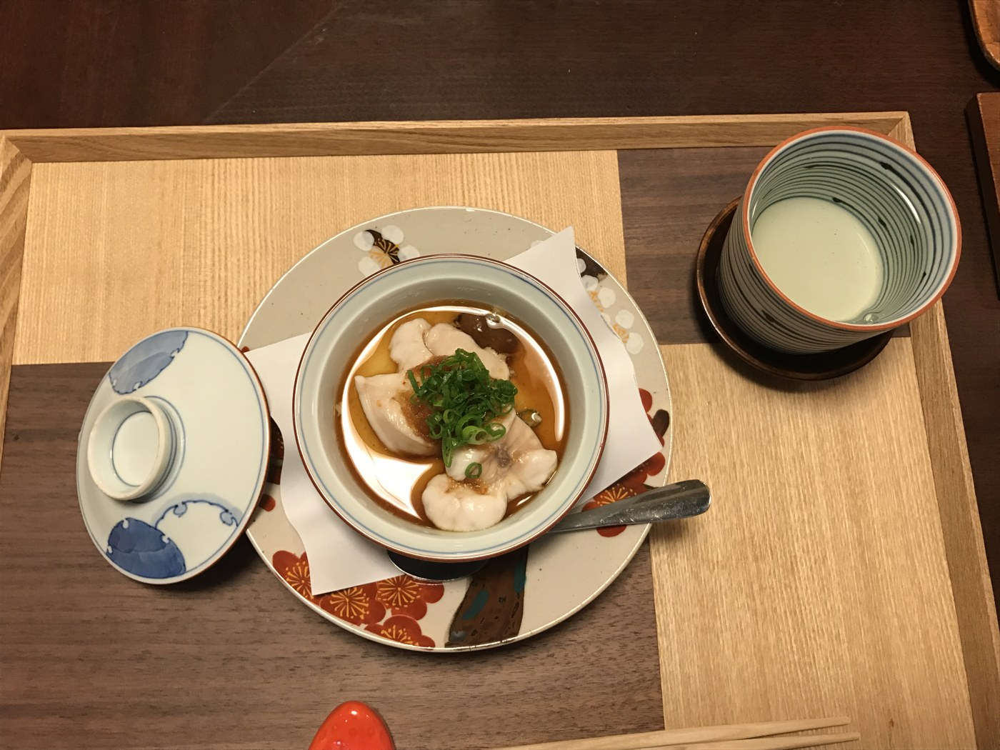
| 営業時間 | 18:00〜22:00（料理・ドリンクL.O. 21:30）。前日15時までの完全予約制で、当日予約は不可 |
|---|---|
| 定休日 | 日曜・祝日（公式サイトは「不定休」と記載。4名以上なら日曜・祝日も相談可） |
| 住所 | 広島県広島市中区胡町2-17 1階 |
| 予約 | 要予約（完全予約制・2名から。前日15時まで） — ☎ 082-545-7717 ／ 公式サイト |
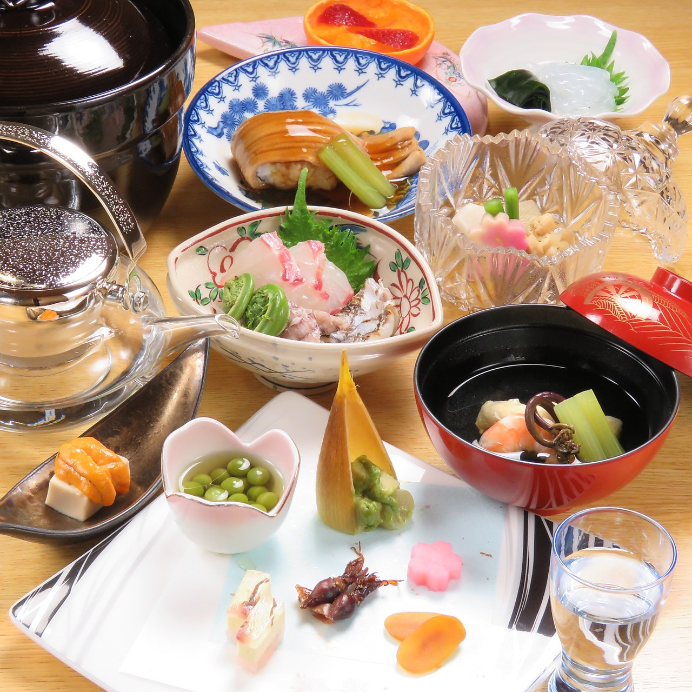
| 営業時間 | 月〜土・祝前日 17:00〜23:00（料理L.O. 22:00／ドリンクL.O. 22:30） |
|---|---|
| 定休日 | 日曜・祝日（予約があれば営業） |
| 住所 | 広島県広島市中区八丁堀13-15 |
| 予約 | 要予約（ホットペッパーのネット予約は受付停止中。電話での予約が必要だが電話番号は未確認） |
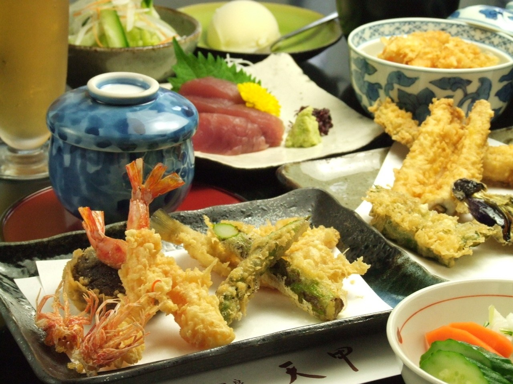
| 営業時間 | 火〜日・祝・祝前日 11:30〜14:00（料理・ドリンクL.O. 13:30）、17:00〜22:00（料理・ドリンクL.O. 21:00） |
|---|---|
| 定休日 | 月曜、第2日曜（1月・8月・12月を除く）、年末年始・夏季・冬季休暇 |
| 住所 | 広島県広島市中区中町5-1 中町長沼ビル2F |
| 予約 | 可（問い合わせ時間10:00〜20:00。個室利用は別途1,050円。電話番号は未確認） |
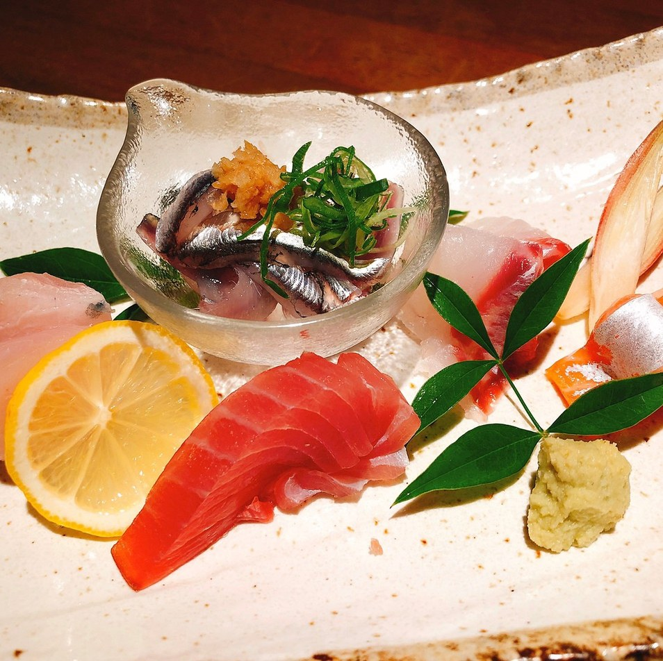
| 営業時間 | 月〜木 11:30〜13:30（料理L.O. 13:00）・17:00〜22:00（料理L.O. 22:00／ドリンクL.O. 21:30）／金・祝前日 11:30〜13:30・17:00〜23:00／土 17:00〜23:00／祝日 17:00〜21:30 ※土日祝の昼は営業なし |
|---|---|
| 定休日 | 日曜 |
| 住所 | 広島県広島市中区大手町5-7-20 |
| 予約 | 可（ネット予約は来店日当日21時まで即予約可、前日17時までリクエスト予約可。コースのキャンセルは前日23時以降50%） |
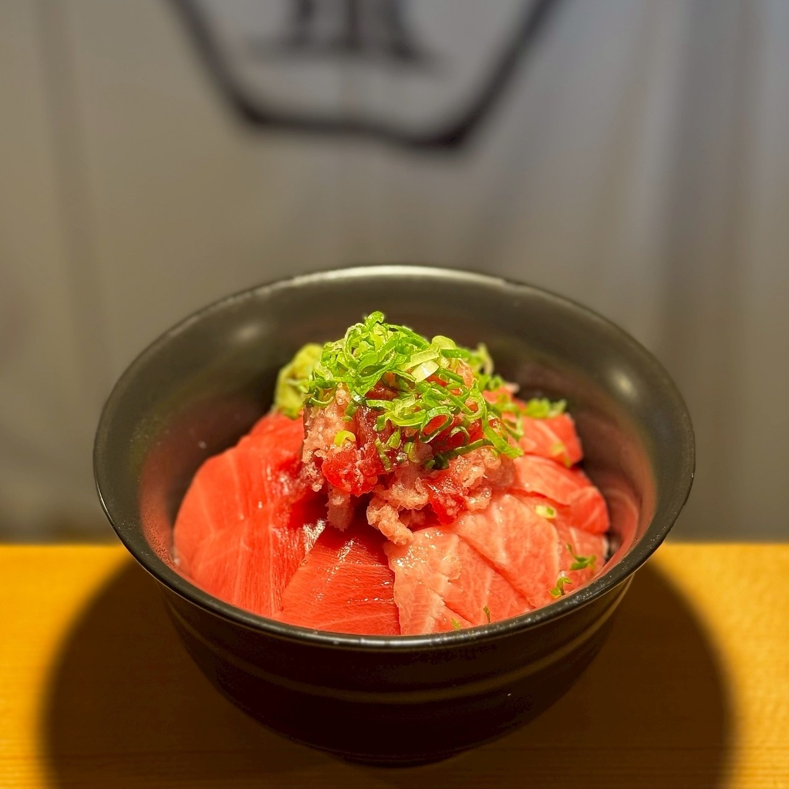
| 営業時間 | 2階（店内）ディナー 火〜土・祝 17:30〜22:00（料理L.O. 21:00／ドリンクL.O. 21:30）、日曜は11:30〜14:00（料理・ドリンクL.O. 14:00）と17:30〜22:00／1階（持ち帰り）11:30〜19:00 |
|---|---|
| 定休日 | 月曜 |
| 住所 | 広島県広島市安佐南区大町西1丁目4-31 サニーロード1 |
| 予約 | 可（電話またはLINEで予約。店からの返信で確定。当日の予約は電話） — ☎ 082-962-0970 ／ 公式サイト |
| 営業時間 | 月〜水・日 11:00〜15:00(料理L.O.14:30／ドリンクL.O.14:30)、17:00〜22:00(料理L.O.21:00) / 金・土・祝前日 11:00〜15:00、17:00〜23:00(料理L.O.22:00) |
|---|---|
| 定休日 | 木曜日 |
| 住所 | 広島県広島市中区八丁堀8-11 |
| 予約 | 可(ネット予約・電話予約とも可。個室は要予約) — ☎ 082-211-5811 ／ 公式サイト |
| 営業時間 | 火〜日・祝日・祝前日 11:30〜15:00(料理L.O.14:00／ドリンクL.O.14:00)、17:00〜23:00(料理L.O.22:00／ドリンクL.O.22:00) |
|---|---|
| 定休日 | 月曜日 |
| 住所 | 広島県広島市中区袋町2-9-1 |
| 予約 | 可(ネット予約・電話予約とも可) — ☎ 082-546-1038 |
| 営業時間 | 月・火・木〜日 17:00〜22:00(料理L.O.21:00／ドリンクL.O.21:30) |
|---|---|
| 定休日 | 水曜日、第2木曜日 |
| 住所 | 広島県広島市佐伯区五日市7-13-16 |
| 予約 | 可(ネット予約・電話予約とも可。ネット予約は要問い合わせの日が多い) — ☎ 0829-09-9344 |
| 営業時間 | 月〜日・祝日・祝前日 18:00〜翌0:00(料理L.O.23:30／ドリンクL.O.23:30) |
|---|---|
| 定休日 | 不定休 |
| 住所 | 広島県広島市中区薬研堀3-14 |
| 予約 | 可(ネット予約・電話予約とも可) — ☎ 082-244-0290 |
| 営業時間 | 水〜土・祝日・祝前日 18:00〜翌3:00(料理L.O.翌2:30／ドリンクL.O.翌2:30) |
|---|---|
| 定休日 | 月曜日・火曜日・日曜日 |
| 住所 | 広島県広島市中区銀山町12-26 |
| 予約 | 可(ネット予約・電話予約とも可) — ☎ 082-248-8518 |
| 営業時間 | 月〜土・祝日・祝前日 16:00〜翌0:00(料理L.O.23:00／ドリンクL.O.23:30) / 日 16:00〜23:00(料理L.O.22:00／ドリンクL.O.22:30) |
|---|---|
| 定休日 | 不定休(公式インスタグラム @hs3_official で告知) |
| 住所 | 広島県広島市南区大須賀町12-9 |
| 予約 | 可(ネット予約・電話予約とも可) — ☎ 082-909-9373 ／ 公式サイト |
| 営業時間 | 月〜土・祝前日 17:00〜23:00(料理L.O.22:15／ドリンクL.O.22:15) / 日・祝日 11:30〜23:00(料理L.O.22:15／ドリンクL.O.22:15) |
|---|---|
| 定休日 | 不定休 |
| 住所 | 広島県広島市西区南観音7丁目16-18 |
| 予約 | 可(ネット予約・電話予約とも可。肉ケーキは前日までの要予約) — ☎ 082-296-2995 |
| 営業時間 | 月・火・木・祝日 17:00〜22:00(料理L.O.21:30) / 金・祝前日 17:00〜23:00(料理L.O.22:30) / 土 11:30〜23:00(料理L.O.22:30) / 日 11:30〜22:00(料理L.O.21:30)。土日の昼は11:30〜14:00(L.O.13:30) |
|---|---|
| 定休日 | 水曜日 |
| 住所 | 広島県広島市西区福島町2-5-4 |
| 予約 | 可(ネット予約・電話予約とも可。個室は16名×1室) — ☎ 082-531-2989 |
| 営業時間 | 月・水〜日 17:00〜23:00(料理L.O.22:30／ドリンクL.O.22:30)。飲み放題の最終受付は21:00、最終入店は21:30 |
|---|---|
| 定休日 | 火曜日 |
| 住所 | 広島県広島市安佐南区中須1-14-2 |
| 予約 | 可(ネット予約・電話予約とも可) — ☎ 082-876-2950 |
| 営業時間 | 月〜木 17:00〜翌1:00（料理L.O. 翌0:00／ドリンクL.O. 翌0:30）／金・土 11:30〜翌3:00（料理L.O. 翌2:00）／日・祝 11:30〜翌0:00（料理L.O. 23:00）。11:30〜18:00はハッピーアワー |
|---|---|
| 定休日 | 無休（ただし月・火・水・木はランチ営業を休み。祝日の場合はランチも営業） |
| 住所 | 広島県広島市中区堀川町1-14 レックスMB2F |
| 予約 | 可（電話・ネット予約。ネット予約は来店日の翌0時まで受付、リクエスト予約は前日17時まで） — ☎ 082-545-6107 ／ 公式サイト |
| 営業時間 | 月〜水・金〜日・祝 11:30〜14:30（料理L.O. 14:00）／17:00〜23:00（料理L.O. 22:30）。2階のバル「Nido notte」は毎日19:00〜翌1:00（L.O. 翌0:30） |
|---|---|
| 定休日 | 木曜日 |
| 住所 | 広島県広島市中区立町3-2 桂ビル1F |
| 予約 | 可（電話・ネット予約。ネット予約は来店日当日21時まで受付、リクエスト予約は前日17時まで） — ☎ 082-909-9459 |
| 営業時間 | 月・水〜日・祝 11:00〜15:00（料理L.O. 14:30）／17:30〜22:00（料理L.O. 21:00）。コース・パーティープランの予約は18:00〜19:30開始 |
|---|---|
| 定休日 | 火曜日（祝日の場合は営業し、翌日休業または代休） |
| 住所 | 広島県広島市佐伯区楽々園5丁目2-16-105 |
| 予約 | 可（電話は15:00〜17:30の間が通じやすい。ネット予約は来店日当日17時まで、リクエスト予約は3日前まで） — ☎ 082-554-4336 |
| 営業時間 | 月・水〜日 12:00〜15:00（料理L.O. 14:00）／17:00〜23:00（料理L.O. 22:00）。テラス席のみ15:00〜17:00も通し営業（雨天時は閉鎖） |
|---|---|
| 定休日 | 火曜日 |
| 住所 | 広島県広島市中区中町1-19 |
| 予約 | 可（電話・ネット予約。コースは2階席確約のものがある） — ☎ 082-258-8551 ／ 公式サイト |
| 営業時間 | 月・火・木〜日・祝 11:00〜16:00（ランチは11時・13時の2部制）／18:00〜21:30（料理L.O. 20:00／ドリンクL.O. 21:00） |
|---|---|
| 定休日 | 水曜日（ほかに月2回の不定休あり） |
| 住所 | 広島県広島市佐伯区皆賀3-22-26-5 |
| 予約 | 可（電話・ネット予約。リクエスト予約は返信に数日かかることがあり、返答がメールで届く場合がある） — ☎ 082-961-4839 ／ 公式サイト |
| 営業時間 | 月〜水・金〜日・祝 11:00〜14:30（料理L.O. 14:00）／17:30〜22:00（料理L.O. 21:00） |
|---|---|
| 定休日 | 木曜日（ほかに不定休あり） |
| 住所 | 広島県広島市南区的場町1-7-24 |
| 予約 | 可（電話・ネット予約） — ☎ 082-569-9639 |
| 営業時間 | 月〜日・祝 11:00〜15:00（L.O. 15:00）／17:00〜23:00（料理L.O. 22:30／ドリンクL.O. 22:30） |
|---|---|
| 定休日 | 無休 |
| 住所 | 広島県広島市西区三篠町2丁目14-9 |
| 予約 | 可（電話・ネット予約。15〜28名の貸切は要相談） — ☎ 082-237-8858 |
| 営業時間 | 月〜土・祝・祝前日 17:30〜22:30（料理L.O. 22:00／ドリンクL.O. 22:30）。昼の営業はなし |
|---|---|
| 定休日 | 日曜日（ほかに不定休の場合あり） |
| 住所 | 広島県広島市中区紙屋町1丁目4-3 エフケイビル301 |
| 予約 | 可（電話・ネット予約。テラスのテント席（半個室）は電話予約のみ） — ☎ 082-207-0015 |
| 営業時間 | 11:30〜14:30（料理L.O. 14:00／最終入店13:30）／17:30〜21:30（料理L.O. 21:00／最終入店20:30） |
|---|---|
| 定休日 | 火曜日（毎月最終火曜日は営業。年末年始は休み） |
| 住所 | 広島県広島市中区十日市町1丁目3-10 |
| 予約 | 可（電話・ネット予約。個室は2〜56名で要予約） — ☎ 082-231-1218 ／ 公式サイト |
| 営業時間 | 8:00〜18:30（モーニングは8:00〜11:00） |
|---|---|
| 定休日 | 日曜・祝日 |
| 住所 | 広島県広島市中区宝町6-15 |
| 予約 | 不要（予約の受付についての記載はなく来店順） — ☎ 082-249-3850 ／ 公式サイト |
| 営業時間 | 平日 7:00〜19:00／土日祝 7:00〜18:00（モーニング 7:00〜10:30） |
|---|---|
| 定休日 | 年末年始・お盆 |
| 住所 | 広島県広島市中区大手町5丁目6-11 |
| 予約 | 不要（予約についての記載なし） — ☎ 082-244-2327 |
| 営業時間 | 8:00〜21:00（料理L.O. 20:30／ドリンクL.O. 20:30） |
|---|---|
| 定休日 | 無休 |
| 住所 | 広島県広島市中区堀川町3-17 |
| 予約 | 一部可（ネット予約は受付なし。中2階は20名以上でフロア貸切の相談が可能） |
| 営業時間 | 店舗 9:00〜18:00／茶寮コーナー 10:00〜17:00（L.O. 16:30） |
|---|---|
| 定休日 | 元旦のみ |
| 住所 | 広島県広島市中区十日市町1丁目4-26 |
| 予約 | 不要（茶寮は来店順。2階の茶室・ロビーのみ要問い合わせ） — ☎ 082-231-2121 ／ 公式サイト |
| 営業時間 | 10:00〜17:00（L.O. 16:30）※17:00以降は予約のみ |
|---|---|
| 定休日 | 第2・第4日曜（ホットペッパー掲載では第4月曜も休み）。年末年始・お盆は休み |
| 住所 | 広島県広島市中区紙屋町1-4-25 |
| 予約 | 一部可（ネット予約あり。17:00以降は予約のみ） — ☎ 082-246-9339 ／ 公式サイト |
| 営業時間 | 12:00〜18:00 |
|---|---|
| 定休日 | 火曜 |
| 住所 | 広島県広島市南区的場町1-6-8 |
| 予約 | 不要（カウンターで注文する形式。予約についての記載なし） — ☎ 082-569-7013 |
| 営業時間 | 11:00〜18:00（L.O. 17:30）※コーヒー豆の販売は19:00まで |
|---|---|
| 定休日 | 月曜・火曜（ペコマガの記事では火曜のみと記載。訪問前に確認を） |
| 住所 | 広島県広島市南区宇品西4丁目1-67 101 |
| 予約 | 不要（予約についての記載なし） — ☎ 080-2932-8030 |
| 営業時間 | 6:00〜17:00（料理L.O. 16:30／ドリンクL.O. 16:30） |
|---|---|
| 定休日 | 火曜 |
| 住所 | 広島県広島市南区宇品海岸1-13-26 広島港ターミナル2F |
| 予約 | 可（ホットペッパーのネット予約あり。電話は営業時間内に出られない場合があり、店はインスタグラムのDMでの問い合わせを案内している） |
| 営業時間 | 11:00〜17:00 |
|---|---|
| 定休日 | 不定休 |
| 住所 | 広島県広島市中区本川町2丁目1-4 浜本ビル405 |
| 予約 | 不要（予約についての記載なし） |
本ガイドは個人利用目的で作成。掲載情報は2026年10月時点の調査に基づく。写真出典: 各店の公式サイト・公式SNS、および地域情報サイト等の掲載写真（著作権は各サイト・各撮影者に帰属）。引用元は店ごとにカード内へ明記。